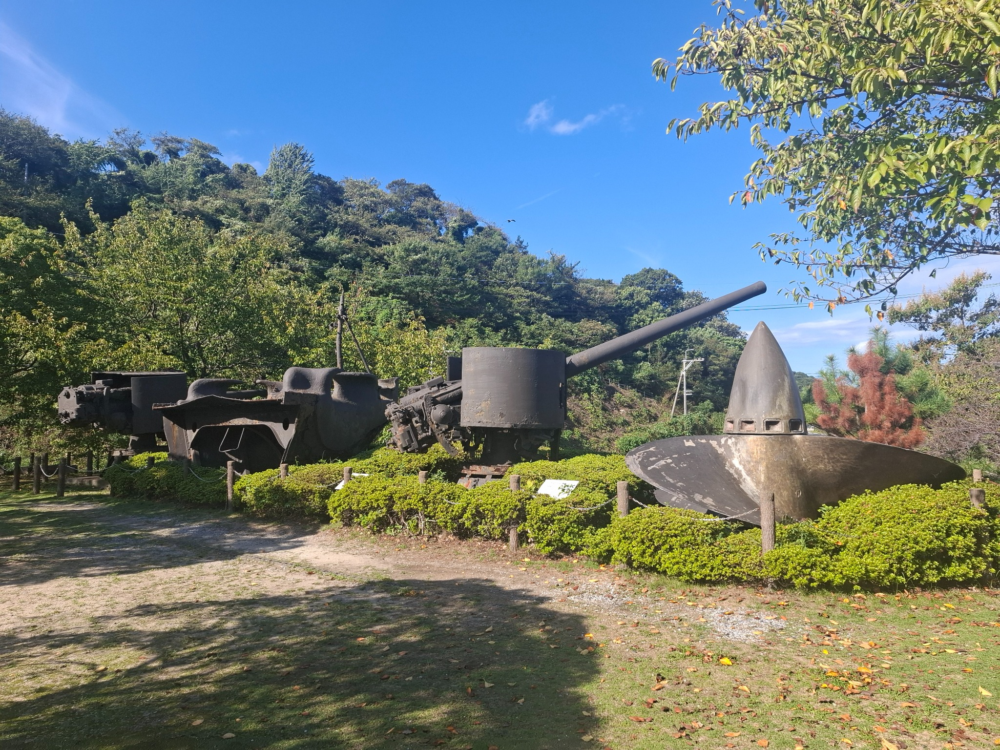
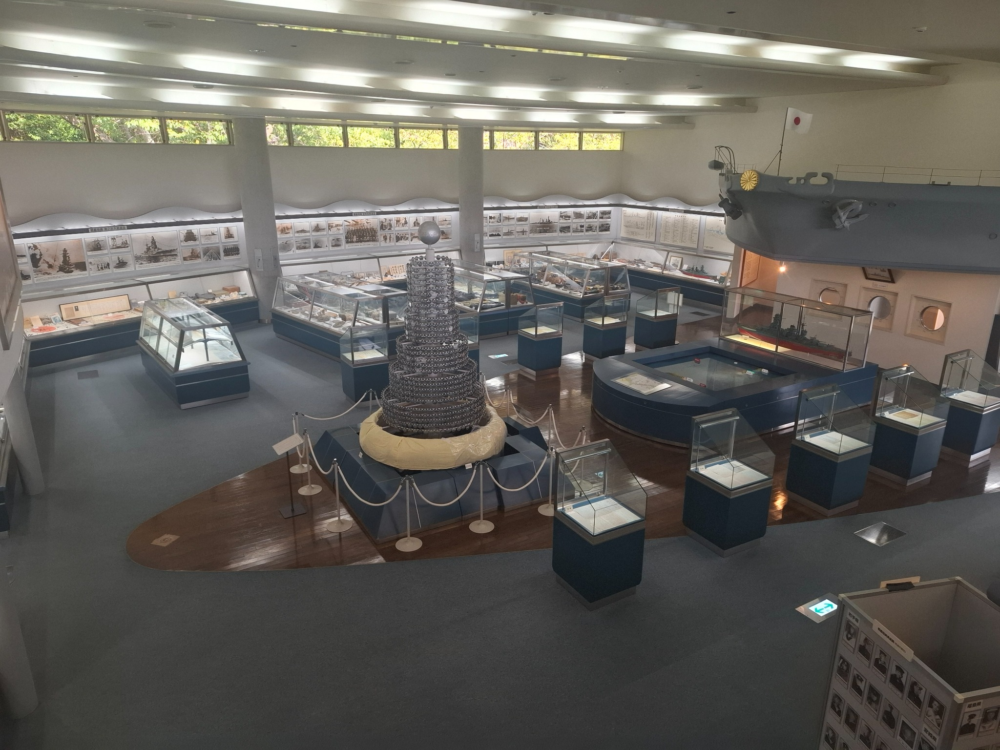
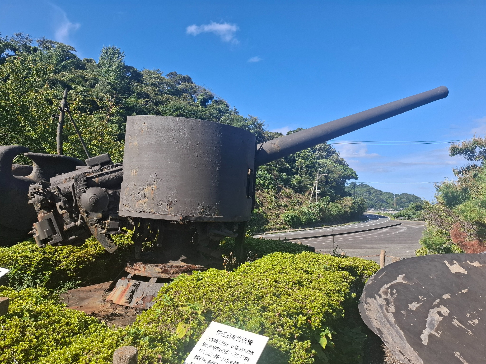
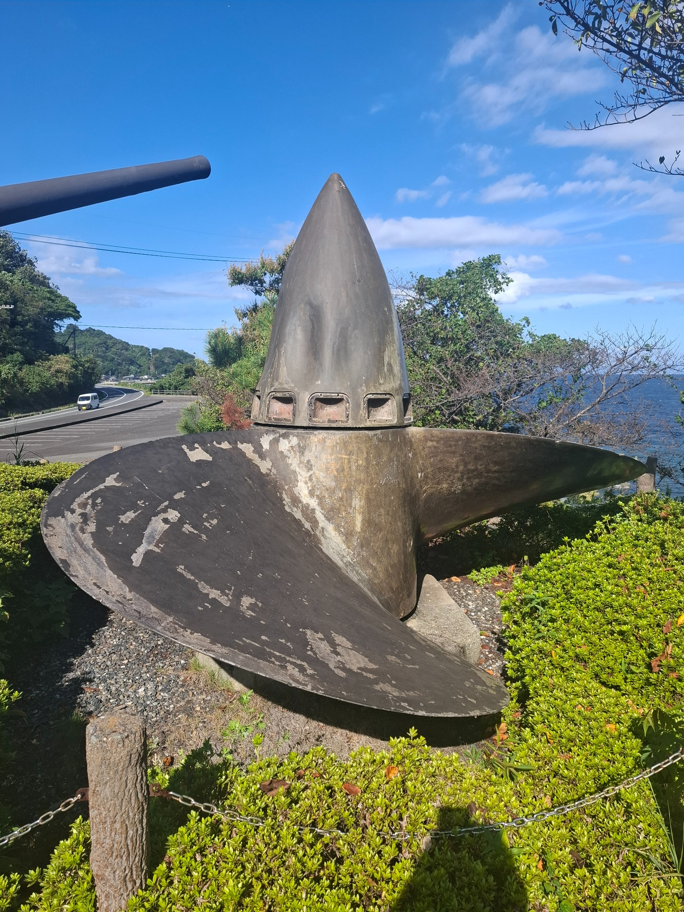
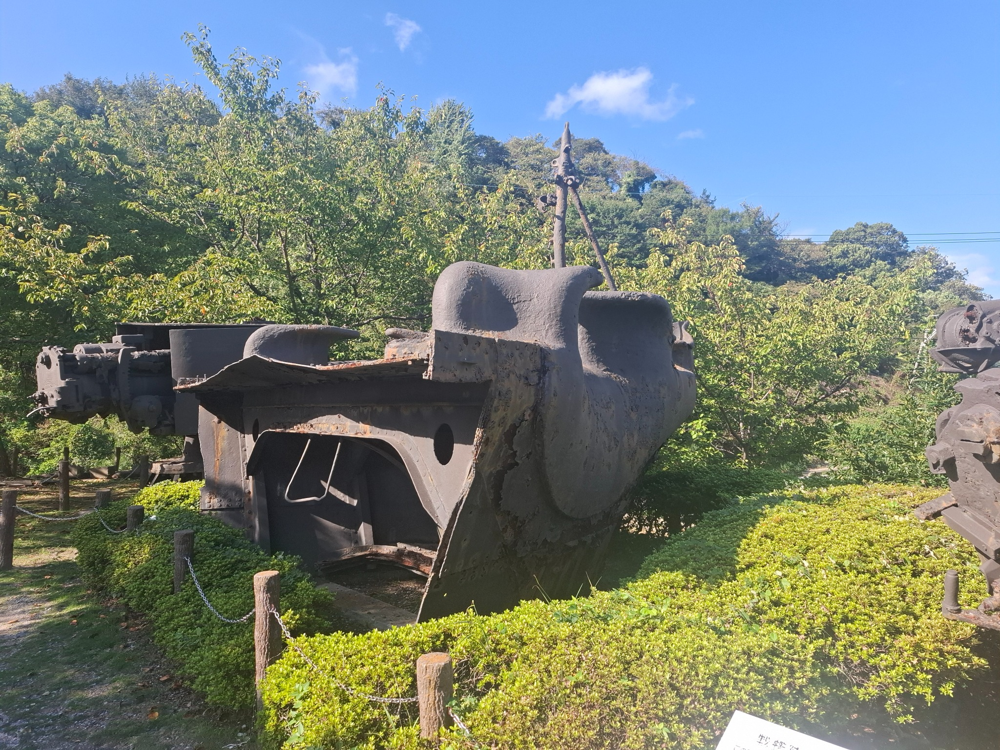
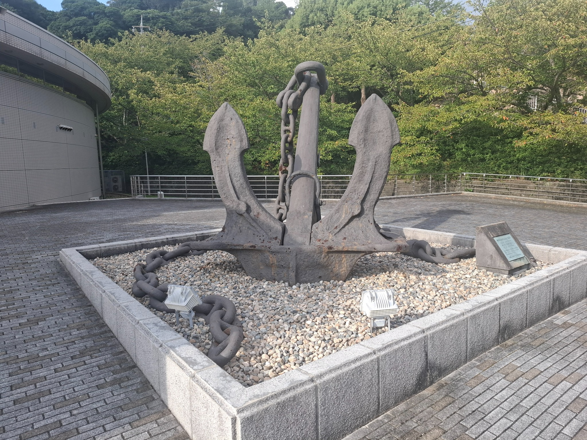

Mutsu Memorial Museum
| Location | 2211-3 Ihota Suo Oshima-machi-oshima-gun, Yamaguchi Prefecture, Japan |
|---|---|
| Visited | 3 October 2026 |
| Website | https://www.visit-jy.com/en/spots/13255 |

Museum Report
On 8 June 1943, the Japanese battleship Mutsu blew up and sank. Of the crew of 1471, only 350 survived. Much of the wreck was salvaged from 1970-78, and the Mutsu Memorial Museum was built on the island of Yashiro, near to the wreck site, to house items which were salvaged, and other material and information sent by survivors and family members.
It is not a large museum, there is just one large gallery housing a wide variety of artefacts retrieved from the wreck, along with ship models, documents, and photographs both of Mutsu in service, and of the salvage operation.

One of the bow anchors from Mutsu is mounted outside the museum, and about 50m away on a small hill, there is an outdoor exhibit area containing two 6-inch guns, a propellor, and Mutsu’s bow, all of which were retrieved from the wreckage.




Virtually all the signage is in Japanese, however they do give you an English-language flyer when you visit.
Getting to the museum isn’t that easy. It is at the far end of Yashiro island (actually closer to Shikoku on the other side of the Inland Sea than Honshu), and while the island is connected to Honshu by a road bridge, it takes a local train and two local buses to get to it – and the bus timetable is pretty infrequent. I chose instead to catch a ferry from Yanai, which drops you at Ihotu port – an easy 850m walk to the museum – but again that ferry only goes four times/day, so transport needs to be planned.
The gift shop sells only a very limited range of generic souvenirs (no books), however one thing they did have here was a small reading library, which contained a fairly large collection of Japanese-language naval journals.
The location for the museum is scenic and peaceful, and the museum succeeds in its stated objective to be a sanctuary of peace and remembrance for the large number of sailors who died on Mutsu. For a naval history tourist, it is a long way to go for a relatively small collection – but for me it was worth it. Mutsu played a significant role in the Washington Naval Conference, and I spent a lot of time researching the background to this vessel during the preparation of my dissertation on Interwar Naval Arms Control. I wasn’t going to miss the opportunity to see and touch the surviving remnants of the vessel.